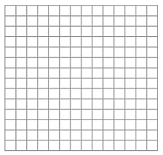
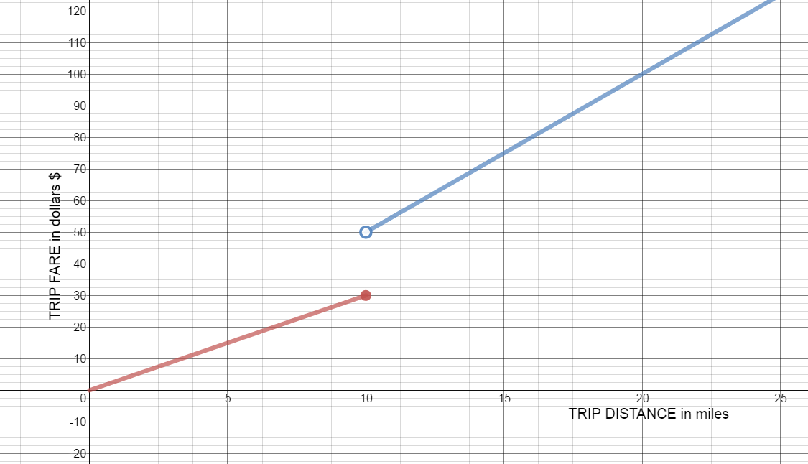

1.2 Finding Limits Algebraically/Infinte Limits
Pre-Class:
- Complete 1.1 Homework assignment: check and correct.
- Take notes on the videos and readings (use the space below).
- Work and check problems #1-#3b in the 1.2 NOTES section.
- Complete the 1.2 Pre-Class Quiz.
Introduction
Discuss this graph with your group.
Write down everything you observe.
Be prepared to share with the class.

Notes
Find each indicated quantity, if it exists.
-
$\mathop {\lim }\limits_{x \to 4} \;{x^2} - 5x + 1 =$
${4^2} - 5\left( 4 \right) + 1 =$
$- 3$
-
$\mathop {\lim }\limits_{x \to - 5} \;2{x^2} + 10x + 7 =$
$2{\left( { - 5} \right)^2} + 10\left( { - 5} \right) + 7 =$
$7$
-
$f\left( x \right) = \;\frac{{3{x^2}\; + 2x - 1}}{{x{\;^2} + 3x + 2}}$
- $\underset{x\rightarrow -3}{lim}f(x)=$
$\underset{x\rightarrow -3}{lim}f(x)=\frac{3{{\left( -3 \right)}^{2}}~+2\left( -3 \right)-1}{\left( -3 \right){{~}^{2}}+3\left( -3 \right)+2}=\frac{20}{2}$
$10$
- $\underset{x\rightarrow -1}{lim}f(x)=$
$\frac{3{{\left( -1 \right)}^{2}}~+2\left( -1 \right)-1}{\left( -1 \right){{~}^{2}}+3\left( -1 \right)+2}=\frac{0}{0}$
Indeterminate form. Factor, reduce, try again.
$\underset{x\rightarrow -1}{lim}f(x)=\underset{x\rightarrow -1}{lim}\frac{\left( 3x-1 \right)\left( x+1 \right)}{\left( x+1 \right)\left( x+2 \right)}=\underset{x\rightarrow -1}{lim}\frac{\left( 3x-1 \right)}{\left( x+2 \right)}=\frac{-4}{1}$
$-4$
- $\mathop {\lim }\limits_{x\; \to \;2} f\left( x \right)$
$=\frac{5}{4}=1.25$
- $\mathop {\lim }\limits_{x\; \to \; - 2} f\left( x \right)$
$=\frac{7}{0}\,$ Does not exist
- $\underset{x\rightarrow -3}{lim}f(x)=$
-
$\mathop {\lim }\limits_{x \to - 5} \;\frac{{x^2\; + 7x + 10}}{{x{\;^2} + 2x -15}}$
$=\frac{(-5)^2+7(-5)+10}{(-5)^2+2(-5)-15}=\frac{0}{0}$
Indeterminate form. Factor, reduce, try again.
$\underset{x\rightarrow -5}{lim}f(x)=\underset{x\rightarrow -5}{lim}\frac{\left( x+5 \right)\left( x+2 \right)}{\left( x+5 \right)\left( x-3 \right)}=\underset{x\rightarrow -5}{lim}\frac{\left( x+2 \right)}{\left( x-3 \right)}=\frac{-3}{-8}$
$=\frac{3}{8}$
-
$\mathop {\lim }\limits_{x \to 4} \;\frac{{x^2\; -16}}{{3x{\;^2} -13x +4}}$
$=\frac{(4)^2-16}{3(4)^2-13(4)+4}=\frac{0}{0}$
Indeterminate form. Factor, reduce, try again.
$\underset{x\rightarrow 4}{lim}f(x)=\underset{x\rightarrow 4}{lim}\frac{\left( x+4 \right)\left( x-4 \right)}{\left( 3x-1 \right)\left( x-4 \right)}=\underset{x\rightarrow 4}{lim}\frac{\left( x+4 \right)}{\left( 3x-1 \right)}=\frac{8}{11}$
$=\frac{8}{11}$
-
$\underset{x\rightarrow 10}{lim} \frac{{{x^2}\; - 15x + 50}}{{{{\left( {x - 10} \right)}^2}}}$
$=\frac{0}{0}$
Indeterminate form. Factor, reduce, try again.
$\underset{x\rightarrow 10}{lim}\,\frac{\left( x-5 \right)\left( x-10 \right)}{{{\left( x-10 \right)}^{2}}}=\underset{x\rightarrow 10}{lim}\,\frac{\left( x-5 \right)}{\left( x-10 \right)}=\frac{5}{0}$
The limit does not exist. On inspection of the graph, the limit as x approaches 10 from the left and the limit as x approaches 10 from the right are not equal. There is a vertical asymptote at x=10.
-
A taxi service charges \$3.00 per mile for the first 10 miles. If the trip is over 10 miles, they charge \$5.00 per mile for every mile. Write a piecewise definition of the charge G(x) for taxi fares of x miles.
Graph G(x) for $0 < x\; \le 25.$

$f(x)= \begin{cases} 3x & 0\leq x\leq 10 \\ 5x & x > 10\\ \end{cases} $
Find:
$\underset{x\rightarrow10^-}{lim}G(x)=$ $30$
$\underset{x\rightarrow10^+}{lim}G(x)=$ $50$
$\underset{x\rightarrow10}{lim}G(x)=$ Does not exist

-
$\underset{x\rightarrow\infty}{lim} \;\frac{{7{x^3}\; - {x^2}\; + 1}}{{5{x^3}\; + 6x\; - 7}} =$
$\underset{x\rightarrow\infty}{lim} \;\frac{{7{x^3}\;}}{{5{x^3}\;}} = \mathop {\lim }\limits_{x \to \infty } \;\frac{{7\;}}{{5\;}} = \frac{7}{5}$
Horizontal Asymptote at $y=\frac{7}{5}$
-
$\underset{x\rightarrow\infty}{lim} \;\frac{{6{x^4}\;-{x^2}\; + 1}}{{2{x^6}\;\; - 8x}} =$
$\underset{x\rightarrow\infty}{lim} \;\frac{{6{x^4}\;}}{{2{x^6}}} = \underset{x\rightarrow\infty}{lim} \;\frac{{3\;}}{{{x^2}}} = 0$
Horizontal Asymptote at $y=0$
-
$\underset{x\rightarrow\infty}{lim} \;\frac{{4{x^5}\;-\;9{x^3} - \;1}}{{5{x^3}\; + 3{x^2}\; - 7}} =$
$\underset{x\rightarrow\infty}{lim}\;\frac{{4{x^5}\;}}{{5{x^3}\;}} = \underset{x\rightarrow\infty}{lim} \;\frac{{4{x^2}\;}}{{5\;}} = \infty $
Because the function does not approach a specific y value as x approaches infinity, there is no horizontal asymptote.
Vertical and Horizontal Asymptotes: A summary
Find all vertical asymptotes, horizontal asymptotes, and holes of the function, showing all your work:
-
$f\left( x \right) = \;\frac{{2{x^2}\;\; - \;\;32}}{{{x^2}\; + \;5x\; + \;4}}$
$f\left( x \right) = \;\frac{{2\left( {x + 4} \right)\left( {x - 4} \right)}}{{\left( {x + 4} \right)\left( {x + 1} \right)}}$
Vertical Asymptote: x=-1
Hole: x=-4
Horizontal Asymptote: y=2
-
$f\left( x \right)\; = \frac{{{x^2}\;\; - \;\;9}}{{{x^2}\;\; - \;\;4}}$
$f\left( x \right) = \;\frac{{\left( {x + 3} \right)\left( {x - 3} \right)}}{{\left( {x + 2} \right)\left( {x - 2} \right)}}$
Vertical Asymptote: x=2 and x=-2
Hole: none
Horizontal Asymptote: y=1
Find all vertical asymptotes, horizontal asymptotes, and holes of the function by a quick analysis:
-
$f\left( x \right)\; = \frac{{x\;\; + 2}}{{{x^2}\; + \;3}}$
Vertical Asymptote: none
Hole: none
Horizontal Asymptote: y=0
-
$f\left( x \right)\; = \frac{{{x^2}\; - 3x - \;10}}{{{x^2}\; - \;4x - 5}}$
$f(x) = \frac{{\left( {x - 5} \right)\left( {x + 2} \right)}}{{\left( {x - 5} \right)\left( {x + 1} \right)}}$
Vertical Asymptote: x=-1
Hole: x=5
Horizontal Asymptote: y=1
-
$f(x) = \frac{{{x^2} + 5x - 14}}{{x - 2}}$
$=\frac{(x+7)(x-2)}{x-2}$
Vertical Asymptote: There are no vertical asymptotes.
Hole: x=2
Horizontal Asymptote: There are no horizontal asymptotes.
Identify the horizontal asymptotes of the following rational expression (if the horizontal asymptote exists)
![Piecewise graph of G(x) Horizontal line at y=19.99 on domain (0,145] Horizontal line at y=29.99 on domain (145,175]](images/hw/u1s1p10b.png)
![Coordinate Plane: -10 to 10 on x- and y-axes. Vertical Asymptotes at x =-4 and x=2. Three curves graphed on the plane. Left curve begins at top left of graph, crosses the x-axis at approximately -7.75, continues down until approximately (-6,-4), is horizontal until x=-4.5, then increases very close to the vertical asymptote at x=-4. The middle curve rises from the bottom of the graph along the vertical asymptote at x=-4 until the point (-2,-1). The curve then decreases until its endpoint at (2,-3). This endpoint is a solid dot. The curve on the right third of the graph is decreasing from the top of the coordinate plane along the right side of the vertical asymptote at x=2. It crosses the x-axis at approximately x=2.25 and continues decreasing. This curve decreases more slowly (level out) beginning at x=3 to almost a horizontal line at y=-5.](images/hw/u1s2cp1.png)